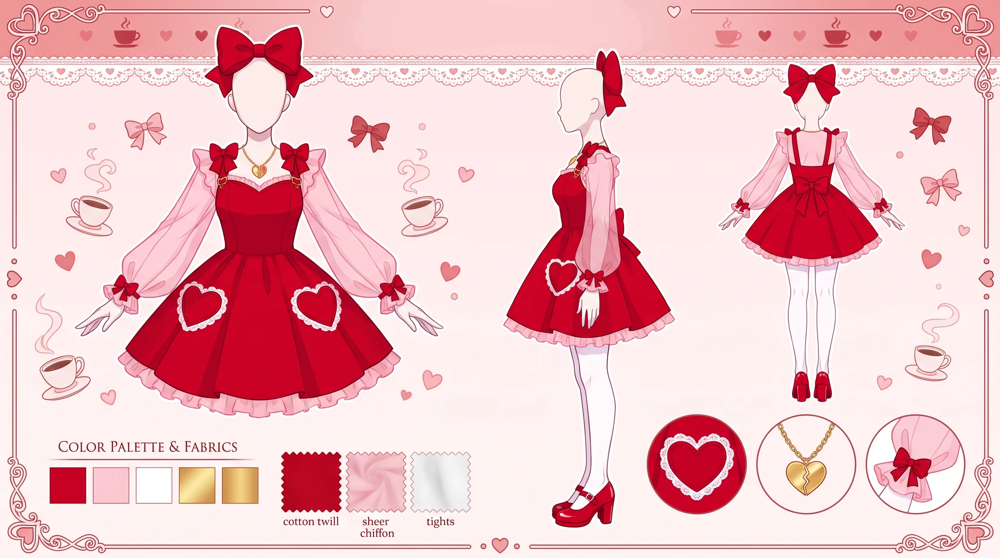
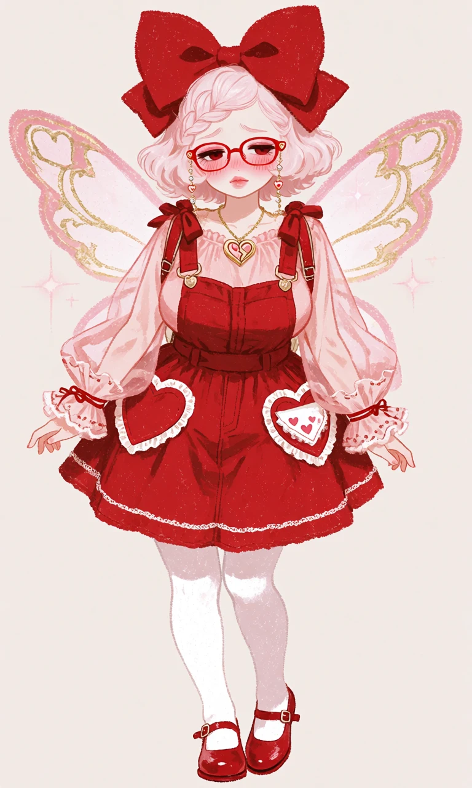
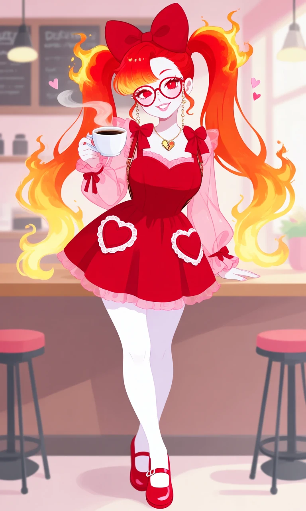

Love You to Pieces

Outfit Prompt
Cute Valentine-inspired outfit, romantic feminine fashion, ruby red, soft pink, and white color palette.
Bright red overall mini dress with a fitted bodice and a short, softly flared skirt. Large red ribbon bows tied at the shoulders instead of traditional overall straps. Two large heart-shaped pockets on the front of the skirt, decorated with delicate white frilled trim.
A sheer light-red blouse worn underneath the dress, featuring long, puffy translucent sleeves, gathered wrists, and elaborate frilled cuffs. Soft romantic ruffles and delicate stitching.
White opaque tights and shiny red Mary Jane shoes with rounded toes, small straps, and silver buckles.
A small red heart-shaped backpack with thin shoulder straps. A delicate gold broken-heart locket necklace, with two halves that fit together to form a complete heart.
Thin red ribbon bracelets tied into little bows around the wrists.
An enormous red heart-shaped hair bow, delicate red-framed glasses with a thin gold glasses chain decorated with tiny pearl hearts.
Adorable romantic fashion, playful heart decorations, soft ruffles, feminine silhouette, charming Valentine's Day aesthetic.
Outfit Examples



